ロジックICで組む
実装の方針
開発のユニット化

ユニット開発という開発方針をとります。アジャイル開発を適用したものです。アジャイル開発の肝は、常に動作可能な物を作り続けることにあります。
普通、ハードウェアは完成するまで動かせません。
まず、CPUのうち、あるユニットをロジックICで作ります。そうしたら、それ以外の部分をマイコンで補完します。
「実装済み部分＋未実装部分のエミュレータ」
1. ALU
最初にALUを作ります。ALUの遅延がステージ長を決める上で重要なので。 ALUはいうても大きな組み合わせ回路なのでテストが楽です。
2. メモリ空間
次にメモリ空間を作ります。「空間」といったのはアドレスとバスをインターフェイスとしてデバイスにアクセスするシステムという意味を強調するためです。
3. データパス
ここまでくれば、演算命令と転送命令を実行することができ、CPUとしての機能を確かめることができます。
4. プログラム制御ユニット
プログラムカウンタ周辺の回路を
5. ROMとライタ
6. 命令デコーダとクロック
プログラムの実行を制御するユニットです。
FPGAでの実装
ID 命令デコーダ
| ALU | S2 | DIN | 1.ADR | 2.ADR | 3.ADR | |
|---|---|---|---|---|---|---|
| add | Func | RS2 | ALU | RS1 | RS2 | RD |
| addi | Func | IMM | ALU | RS1 | - | RD |
| load | ADD | IMM | RS2 | RS1 | ALU | RD |
| store | ADD | IMM | RS2 | RS1 | RS2 | ALU |
| callif | ADD | IMM | RA | RS1 | RS2 | RD |

`define CALC 4'b0000
`define CALCI 4'b0001
`define LOAD 4'b0011
`define STORE 4'b0111
`define CALIF 4'b1111
module ID(
input wire [31: 0] OP,
output wire [ 3: 0] RS1,
output wire [ 3: 0] RS2,
output wire [ 3: 0] RD,
output wire [31:16] IMM,
output wire [ 1: 0] DIN_SEL,
output wire [ 1: 0] ADDR_SEL,
output wire [ 3: 0] ALU_CTRL,
output wire PFC_CTRL,
);
wire [3:0] OPC;
assign RS1 = OP[ 3: 0];
assign RS2 = OP[ 7: 4];
assign RD = OP[11: 8];
assign OPC = OP[15:12];
assign IMM = OP[31:16];
assign ALU_CTRL = OPC==`CALC ? OP[19:16]
: OPC==`CALCI ? OP[ 7: 4]
: `ALU_ADD;
assign ADDR_SEL = STAGE==0 ? `ADDR_RS1
: STAGE==1 ? `ADDR_RS2
: STAGE==2 ? `ADDR_RD;
assign DIN_SEL = OPC==`CALC|`CALCI ? `DIN_ALU
: OPC==`LOAD|`STORE ? `DIN_RS2
: OPC==`CALLIF ? `DIN_RA;
assign S2_SEL = OPC==`CALC ? `S2_RS2
: `S2_IMM;
endmoduleALU
演算装置。必要な演算は、
| 演算 | 実装 | |
|---|---|---|
| + | 加算 | 74181 |
| - | 減算 | 74181 |
| & | ビット AND | 74181 |
| | | ビット OR | 74181 |
| ^ | ビット XOR | 74181 |
| ~ | ビット NOT | 74181 |
| >> | 右シフト（符号あり） | MUX |
| >> | 右シフト（符号なし） | MUX |
| << | 左シフト | 74181 |
| == | 一致比較 | 7485 |
| < | 大小比較（符号あり） | 7485 |
| < | 大小比較（符号なし） | 7485 + MSB NOT |
74HC181 で実装する。
| 74181 | Cn | M | S3 | S2 | S1 | S0 |
|---|---|---|---|---|---|---|
| ADD + | 0 | 0 | 1 | 0 | 0 | 1 |
| SUB - | 1 | 0 | 0 | 1 | 1 | 0 |
| AND & | - | 1 | 1 | 1 | 1 | 0 |
| OR | | - | 1 | 1 | 0 | 1 | 1 |
| XOR ^ | - | 1 | 1 | 0 | 0 | 1 |
| NOT ~ | - | 1 | 0 | 0 | 0 | 0 |
クロック
ロジック IC
- 入手性を考えて、できるだけ少ない種類で実装したい。
- 高機能 IC は入手性が悪いので単純な IC で作りたい。
- MUX を 3 ステートで作るか、MUX の IC で作るか問題
- 157 は A/B の選択に加え、出力を 0 にする ST ピンがある
- 541 はピン配置が綺麗なので基板の配線が楽になる
- 541 は排他回路が必要
RAM
これをメインメモリにします。ふつうの SRAM です。SRAM といってもフリップフロップが大量に並んでるだけなので、使い方は単純です。
- Note
- 出力は最大 50mA
- !CS=1 で Z 出力
- TSOP
- 5V
- READ
- !WE=1, !CS=0, !OE=0, !BHE=0, !BLE=0
- ADDRESS にアドレスを書き込めば、
- tAA < 10ns でデータが出力される
- WRITE
- !CS=0, !OE=1, !BHE=0, !BLE=0
- ADDRESS と DATA にセットします
- !WE の立ち上がりでデータが保存されます
IO
IO 領域のアドレスが指定された場合、SRAM の!CE=1 にします。
ROM
Microchip 2Mb Flash SST39VF200A （データシート）
- Note
- 5V
- TSOP
- READ
- !CE=0, !OE=0
- ADDRESS を入力すると
- TAA < 55ns でデータが出力される
- WRITE
- コントローラにコマンドを送る必要がある
- めんどいがライタでやるのでヨシ
ROM ライタ
ROM は別基板にして取り外せるようにします。
ROM 基板を ROM ライタ基板に挿して Arduino で書き込みます。
ALU
74181 を使って、plus・minus・not・and・or・xor の演算ができる。
左シフトは 74181 の A plus A を使う
シフト演算は、MUX の 0 出力を使う？
PFC
クロック
マイコンの心臓だが…回路は単純
ステートカウンタ
- ジャンプなし
- COUNT UP に POSEDGE を入れる
- ジャンプあり
- DATA INPUT に次のアドレスをセットして、!LOAD に NEGEDGE を入れる